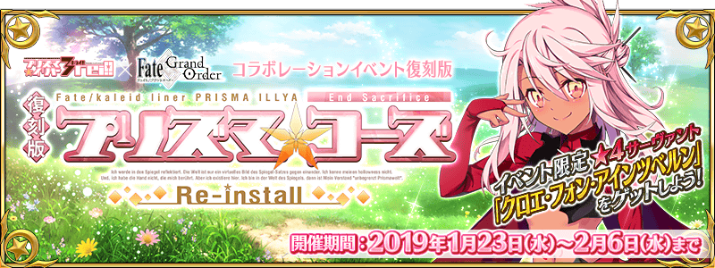

本頁面資訊僅供參考，實際情況請以遊戲內資料為準。
由於直接使用官方翻譯，可能會與其他站內翻譯相異，敬請見諒。
其他公告內容請參照日版當時公告翻譯。

| 活動限定效果 | ||
|---|---|---|
 |
|
魔法少女力 A 自身在『復刻版:魔法少女紀行 ～Prisma・Codes～』中的攻擊威力提升100%＆通過關卡時獲得的絆增加50% |
|
|
魔法少女力 B 自身在『復刻版:魔法少女紀行 ～Prisma・Codes～』中的攻擊威力提升50%＆通過關卡時獲得的絆增加20% |
 |
| 獅子號君的掉落數量增加1個(最大解放:2個) |
|
| 魔法☆武士道武藏的掉落數量增加1個(最大解放:2個) |
|
| 高級布丁的掉落數量增加1個(最大解放:2個) |
|
| 只限〔女性〕Servant裝備時，在『復刻版:魔法少女紀行 ～Prisma・Codes～』的攻擊威力提升50%＆在「World End Match」的Buster卡威力提升50%(最大解放:100%) |
|
| 只限〔女性〕Servant裝備時，在『復刻版:魔法少女紀行 ～Prisma・Codes～』的攻擊威力提升50%＆在「World End Match」的Arts卡威力提升50%(最大解放:100%) |
|
| 只限〔女性〕Servant裝備時，在『復刻版:魔法少女紀行 ～Prisma・Codes～』的攻擊威力提升50%＆在「World End Match」的Quick卡威力提升50%(最大解放:100%) |
| 任務 | 獎勵 | 解鎖條件 |
|---|---|---|
| No.1 完成任務『1 ins 奇奇怪怪的糖果之國 【Ⅱ】』 | 開放關卡：糖果之國 EXTRAⅠ | 1/23 17:00後 |
| No.2 完成任務『糖果之國 EXTRAⅠ』 | 100 開放關卡：1 ins 奇奇怪怪的糖果之國【Ⅲ】 | 達成：No.1 |
| No.3 擊敗『星與詩的魔法少女 童☆謠』 | 通過：1 ins 奇奇怪怪的糖果之國【Ⅲ】 | |
| No.4 擊敗『愛與治愈的魔法少女 治愈系☆美狄亞』 | 通過：2 wei! 大海原與龍之國 【Ⅲ】 | |
| No.5 擊敗『魔法少女導師 偉大之魂♀海倫娜』 | 通過：3 rei!! 死亡書架之國 【Ⅲ】 | |
| No.6 擊敗『蜂蜜禁誓系魔法少女 康諾特☆梅芙』 | 通過：4 ier!!! 雪花與蜂蜜之國【Ⅳ】 | |
| No.7 擊敗『First Lady』 | 通過：letztes 星原與水晶之國【Ⅳ】 | |
| No.8 擊敗『魔法紳士 歌☆劇☆魅☆影』 | 5 | 通過：白面紳士．宿命篇 |
| No.9 擊敗『魔法紳士 愛德華☆蒂奇』 | 5 | 通過：黑鬍子紳士．謀略篇 |
| No.10 擊敗『魔法紳士 吉爾☆德☆萊斯』 | 5 | 通過：藍鬍子紳士．追想篇 |
| No.11 擊敗『魔法紳士 迪爾姆德☆奧德利暗』 | 5 | 通過：翡翠紳士．血淚篇 |
| No.12 擊敗所有『魔法紳士』 | 開放關卡：那應注目的羽化 | 通過：魔法紳士．邂逅篇 |
| No.13 擊敗『聖約』 | 通過：那應注目的羽化 | |
| No.14 使得『星與詩的魔法少女 童☆謠』的Episode Countdown減少100,000 | 2 | 通過：1 ins 奇奇怪怪的糖果之國【Ⅲ】 |
| No.15 使得『愛與治愈的魔法少女 治愈系☆美狄亞』的Episode Countdown減少500,000 | 5m | 通過：2 wei! 大海原與龍之國 【Ⅲ】 |
| No.16 使得『魔法少女導師 偉大之魂♀海倫娜』的Episode Countdown減少1,000,000 | 開放關卡：死亡書架之國 Rank C | 通過：3 rei!! 死亡書架之國 【Ⅲ】 |
| No.17 使得『蜂蜜禁誓系魔法少女 康諾特☆梅芙』的Episode Countdown減少1,500,000 | 通過：4 ier!!! 雪花與蜂蜜之國【Ⅳ】 | |
| No.18 使得『First Lady』的Episode Countdown減少2,500,000 | 6m | 通過：letztes 星原與水晶之國【Ⅳ】 |
| No.19 使得『魔法紳士 歌☆劇☆魅☆影』的Episode Countdown減少1,500,000 | 200 | 通過：白面紳士．宿命篇 |
| No.20 使得『魔法紳士 愛德華☆蒂奇』的Episode Countdown減少1,500,000 | 7m | 通過：黑鬍子紳士．謀略篇 |
| No.21 使得『魔法紳士 吉爾☆德☆萊斯』的Episode Countdown減少2,000,000 | 5 | 通過：藍鬍子紳士．追想篇 |
| No.22 使得『魔法紳士 迪爾姆德☆奧德利暗』的Episode Countdown減少2,000,000 | 5 | 通過：翡翠紳士．血淚篇 |
| No.23 使得『聖約』的Episode Countdown減少4,000,000 | 通過：那應注目的羽化 | |
| No.24 擊敗20個『餅乾魔偶』 | 開放關卡：World End Match 童☆謠 | 通過：World End Match 童☆謠 |
| No.25 擊敗50個『餅乾魔偶』 | 5 | 達成：No.24 |
| No.26 擊敗80個『餅乾魔偶』 | 5 開放關卡：白面紳士．宿命篇 | 通過：魔法紳士．邂逅篇 |
| No.27 擊敗30條『彩虹雙足飛龍』 | 5 開放關卡：World End Match 治癒系☆美狄亞 | 通過：World End Match 治癒系☆美狄亞 |
| No.28 擊敗50條『彩虹雙足飛龍』 | 5 | 達成：No.27 |
| No.29 擊敗20本『魔道書』 | 5 開放關卡：World End Match 偉大之魂♀海倫娜 | 通過：World End Match 偉大之魂♀海倫娜 |
| No.30 擊敗50本『魔道書』 | 5 | 達成：No.29 |
| No.31 擊敗20個『雪人』 | 5 | 通過：4 ier!!! 雪花與蜂蜜之國【Ⅳ】 |
| No.32 擊敗40個『雪人』 | 5 | 達成：No.31 |
| No.33 擊敗40柄『魔法杖』 | 3 | 通過：letztes 星原與水晶之國【Ⅱ】 |
| No.34 擊敗70柄『魔法杖』 | 3 開放關卡：World End Match First Lady | 通過：World End Match First Lady |
| No.35 擊敗30個『骨』系的敵人 | 開放關卡：World End Match 治癒系☆美狄亞 | 通過：World End Match 治癒系☆美狄亞 |
| No.36 擊敗50個『骨』系的敵人 | 5 | 達成：No.35 |
| No.37 擊敗70個『骨』系的敵人 | 通過：epilog 風中綻放的鵝掌草 | |
| No.38 擊敗30個『亡靈』系的敵人 | 5 開放關卡：World End Match 偉大之魂♀海倫娜 | 通過：World End Match 偉大之魂♀海倫娜 |
| No.39 擊敗50個『亡靈』系的敵人 | 5 | 達成：No.38 |
| No.40 擊敗70個『亡靈』系的敵人 | 開放關卡：死亡書架之國 EXTRAⅠ | 達成：No.39 |
| No.41 擊敗50個『有角的』敵人 | 5 開放關卡：雪花與蜂蜜之國 Rank B | 通過：4 ier!!! 雪花與蜂蜜之國【Ⅳ】 |
| No.42 擊敗80個『有角的』敵人 | 5 開放關卡：World End Match 康諾特☆梅芙 | 通過：World End Match 康諾特☆梅芙 |
| No.43 擊敗120個『有角的』敵人 | 達成：No.42 | |
| No.44 擊敗5個Rank EX的『大型』敵人 | 5 開放關卡：黑鬍子紳士．謀略篇 | 通過：魔法紳士．邂逅篇 |
| No.45 擊敗5位持有『龍』特性的偽從者 | 5 | 通過：World End Match 治癒系☆美狄亞 |
| No.46 擊敗10位持有『龍』特性的偽從者 | 5 | 達成：No.45 |
| No.47 擊敗15位持有『龍』特性的偽從者 | 開放關卡：死亡書架之國 EXTRAⅡ | 達成：No.46 |
| No.48 擊敗5位持有『混沌』特性的偽從者 | 5 | 通過：3 rei!! 死亡書架之國 【Ⅲ】 |
| No.49 擊敗10位持有『混沌』特性的偽從者 | 5 開放關卡：World End Match 偉大之魂♀海倫娜 | 通過：World End Match 偉大之魂♀海倫娜 |
| No.50 擊敗15位持有『混沌』特性的偽從者 | 5 開放關卡：星原與水晶之國 Rank A | 達成：No.49 |
| No.51 擊敗5位持有『惡』特性的偽從者 | 5 | 通過：World End Match 偉大之魂♀海倫娜 |
| No.52 擊敗10位持有『惡』特性的偽從者 | 開放關卡：World End Match 康諾特☆梅芙 | 通過：World End Match 康諾特☆梅芙 |
| No.53 擊敗15位持有『惡』特性的偽從者 | 5 | 達成：No.52 |
| No.54 擊敗5位持有『中庸』特性的偽從者 | 5 開放關卡：雪花與蜂蜜之國 Rank A | 通過：3 rei!! 死亡書架之國 【Ⅲ】 |
| No.55 擊敗10位持有『中庸』特性的偽從者 | 5 開放關卡：死亡書架之國 Rank B | 達成：No.54 |
| No.56 擊敗15位持有『中庸』特性的偽從者 | 通過：epilog 風中綻放的鵝掌草 | |
| No.57 擊敗5位持有『秩序』特性的偽從者 | 5 | 通過：World End Match 偉大之魂♀海倫娜 |
| No.58 擊敗10位持有『秩序』特性的偽從者 | 5 開放關卡：World End Match 康諾特☆梅芙 | 通過：World End Match 康諾特☆梅芙 |
| No.59 擊敗15位持有『秩序』特性的偽從者 | 達成：No.58 | |
| No.60 擊敗10位職階為『Assassin』的偽從者 | 5 開放關卡：World End Match First Lady | 通過：World End Match First Lady |
| No.61 擊敗15位職階為『Assassin』的偽從者 | 5 | 達成：No.60 |
| No.62 擊敗10位職階為『Saber』的偽從者 | 5 | 通過：World End Match 治癒系☆美狄亞 |
| No.63 擊敗15位職階為『Saber』的偽從者 | 5 開放關卡：雪花與蜂蜜之國 EXTRAⅠ | 達成：No.62 |
| No.64 擊敗10位職階為『Caster』的偽從者 | 5 開放關卡：World End Match First Lady | 通過：World End Match First Lady |
| No.65 擊敗15位職階為『Caster』的偽從者 | 5 | 達成：No.64 |
| No.66 擊敗20位職階為『Caster』的偽從者 | 通過：魔法紳士．邂逅篇 | |
| No.67 擊敗10位職階為『Lancer』的偽從者 | 5 | 通過：World End Match 治癒系☆美狄亞 |
| No.68 擊敗15位職階為『Lancer』的偽從者 | 5 | 達成：No.67 |
| No.69 擊敗5位Rank EX的『學者』偽從者 | 5 開放關卡：藍鬍子紳士．追想篇 | 通過：魔法紳士．邂逅篇 |
| No.70 擊敗15位『男性』偽從者 | 5 開放關卡：翡翠紳士．血淚篇 | 通過：魔法紳士．邂逅篇 |
| No.71 完成5次『糖果之國』的任務 | 150 開放關卡：World End Match 童☆謠 | 通過：World End Match 童☆謠 |
| No.72 完成5次『大海原與龍之國』的任務 | 5 | 通過：2 wei! 大海原與龍之國 【Ⅱ】 |
| No.73 完成5次『死亡書架之國』的任務 | 通過：3 rei!! 死亡書架之國 【Ⅱ】 | |
| No.74 完成5次『雪花與蜂蜜之國』的任務 | 5 | 通過：4 ier!!! 雪花與蜂蜜之國【Ⅲ】 |
| No.75 完成5次『星原與水晶之國』的任務 | 5 開放關卡：星原與水晶之國 Rank B | 通過：letztes 星原與水晶之國【Ⅲ】 |
| No.76 完成所有的『Rank D』任務 | 5m 開放關卡：星原與水晶之國 Rank C | 通過：letztes 星原與水晶之國【Ⅳ】 |
| No.77 完成所有的『Rank C』任務 | 3 | 通過：letztes 星原與水晶之國【Ⅳ】 |
| No.78 完成所有『Rank B』以及『Rank B+』的任務 | 150 開放關卡：星原與水晶之國 Rank A+ | 通過：letztes 星原與水晶之國【Ⅳ】 |
| No.79 完成所有『Rank A』以及『Rank A+』的任務 | 通過：epilog 風中綻放的鵝掌草 | |
| No.80 完成所有的『Rank EX』任務 | 通過：魔法紳士．邂逅篇 | |
| No.81 完成所有的『糖果之國』任務 | 2 | 通過：糖果之國 Rank EX |
| No.82 完成所有的『大海原與龍之國』任務 | 通過：大海原與龍之國 Rank EX | |
| No.83 完成所有的『死亡書架之國』任務 | 通過：死亡書架之國 Rank EX | |
| No.84 完成所有的『雪花與蜂蜜之國』任務 | 通過：雪花與蜂蜜之國 Rank EX | |
| No.85 完成所有的『星原與水晶之國』任務 | 通過：星原與水晶之國 Rank EX | |
| No.86 完成所有的任務 | 通過：魔法紳士．邂逅篇 | |
| No.87 累計獲得100個『高級布丁』 | 100 開放關卡：大海原與龍之國 Rank B | 通過：World End Match 童☆謠 |
| No.88 累計獲得300個『高級布丁』 | 開放關卡：死亡書架之國 Rank A | 達成：No.87 |
| No.89 累計獲得100個『魔法☆武士道武藏』 | 5 開放關卡：大海原與龍之國 Rank A | 通過：World End Match 童☆謠 |
| No.90 累計獲得300個『魔法☆武士道武藏』 | 開放關卡：雪花與蜂蜜之國 Rank C開放關卡：星原與水晶之國 Rank B+ | 達成：No.89 |
| No.91 累計獲得100個『獅子號君』 | 通過：World End Match 童☆謠 | |
| No.92 累計獲得300個『獅子號君』 | 達成：No.91 | |
| No.93 『克洛伊』達到靈基再臨第1階段 | 5 | 通過：epilog 風中綻放的鵝掌草 |
| No.94 『克洛伊』達到靈基再臨第3階段 | 5 | 達成：No.93 |
| No.95 『克洛伊』的羈絆等級達到3 | 6m | 通過：epilog 風中綻放的鵝掌草 |
| No.96 完成10個任務 | 開放關卡：大海原與龍之國 EXTRAⅡ | 達成：No.1 |
| No.97 完成30個任務 | 開放關卡：雪花與蜂蜜之國 EXTRAⅡ | 達成：No.96 |
| No.98 完成60個任務 | 通過：epilog 風中綻放的鵝掌草 | |
| No.99 完成90個任務 | 通過：魔法紳士．邂逅篇 | |
| No.100 完成所有任務 | 開放關卡：Prisma☆Family | 達成：No.99 |

| 獅子號君 | |||
|---|---|---|---|
| 交換物 | 需求數 | 限制 | 共需 |
| 200 | 1 | 200 | |
| 150 | 1 | 150 | |
| 200 | 1 | 200 | |
| 40 | 10 | 400 | |
| 40 | 10 | 400 | |
| 25 | 20 | 500 | |
| 20 | 20 | 400 | |
| 20 | 20 | 400 | |
| 20 | 20 | 400 | |
| 20 | 20 | 400 | |
| 20 | 20 | 400 | |
| 2 | 0 | 0 | |
| 合計 | 3,850 | ||
| 魔法☆武士道武藏 | |||
|---|---|---|---|
| 交換物 | 需求數 | 限制 | 共需 |
| 150 | 1 | 150 | |
| 200 | 2 | 400 | |
| 40 | 10 | 400 | |
| 20 | 20 | 400 | |
| 20 | 20 | 400 | |
| 15 | 30 | 450 | |
| 15 | 30 | 450 | |
| 20 | 20 | 400 | |
| 20 | 20 | 400 | |
| 20 | 20 | 400 | |
| 10 | 0 | 0 | |
| 合計 | 3,850 | ||
| 高級布丁 | |||
|---|---|---|---|
| 交換物 | 需求數 | 限制 | 共需 |
| 150 | 1 | 150 | |
| 200 | 1 | 200 | |
| 20 | 20 | 400 | |
| 20 | 20 | 400 | |
| 6 | 100 | 600 | |
| 3 | 100 | 300 | |
| 30 | 20 | 600 | |
| 20 | 20 | 400 | |
| 15 | 30 | 450 | |
| 15 | 30 | 450 | |
| 15 | 30 | 450 | |
| 10 | 0 | 0 | |
| 合計 | 4,400 | ||